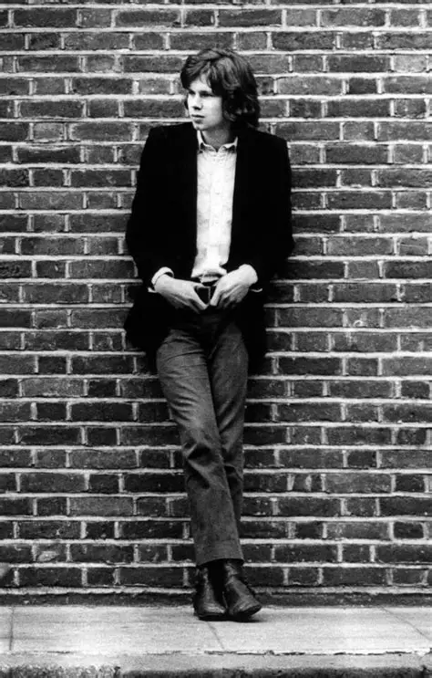

Mystery
Nick Drake is by far the least known artist here, but he is my favorite. I included him for that reason mainly, since he doesn't really fit in with the rest of the musicians here. Drake had a lot of the same influences as these other artists, and included them aswell. He has covered several Bert Jansch songs and "Don't Think Twice, It's Alright" by Bob Dylan. But the thing that sets this individual apart is his incredible mystique.
Currently, there is not a single video recorded of Nick Drake. While they are plenty of photos that he did for photoshoots, the internet has been searching for decades for any tape footage of Nick Drake. There are a few voice recordings where we can hear his speaking voice, but those are scarce and numbered.
Legacy
I could speak about the history of him forever, all the beauty and tragedy, because it is amazing how many people have done interviews talking about him who knew him personally. But I believe his intracate and delicate playing cannot be compared to the other musicians here. It is soft but powerful. It is sweet and complex. As I learn more and more about his guitar playing I continue to be amazed.
He released his first album in 1969. It was solemn and desolate, with wonderful string arrangements. He had only been playing guitar for a few years but developed incredible skill. A college friend Robert Kirby got him to a recording studio, and in just a year the album was finished. It sold terribly, and his self-doubt weighed him down. He released his second album, "Bryter Layter", which was a lot more pop, with bass and drums. Again, a complete flop. The following year he would fall into an intense depression, where he spiraled and distanced himself from anyone and everything. On an occasion, he got in touch with his original producer Joe Boyd, and in 2 nights recorded the entirety of Pink Moon, his 3rd and final album. It is 28 minutes in length, consisting of just Nick Drake and his guitar, besides a piano overdub on the title track. It was raw and intimate. He gave the record to his publisher with no words, and went away. Confused, Islands Records released his album in 1972. It sold worse than his previous two records.

Modern Day
Nick Drake passed two years after the release of Pink Moon, when he was just 26 years old. In 1999, Volkswagen released a comercial which used the song Pink Moon, and instantly it was received wonderfully. People adored his sound, even the press who critisized him for years now praised him. People learned more about him and the tragedies that occured. This only furthered his popularity. It is sad that such a great artist never got the flowers while he was here. But we continue to cherish him and love his music. He is now widely acclaimed, and his story still continues to inspire people, including me.